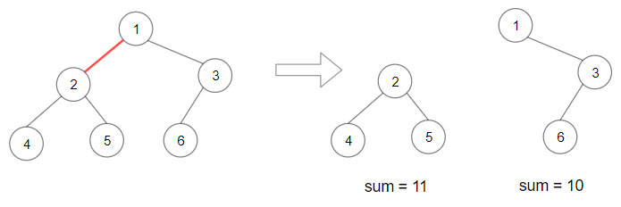
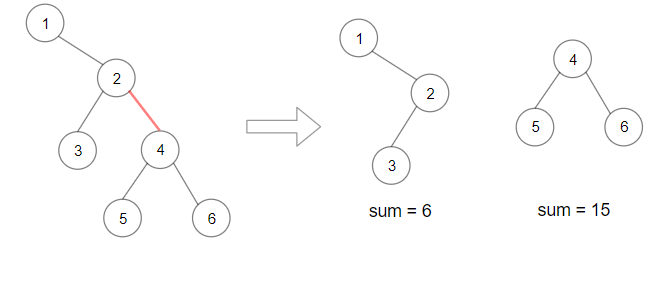

1339. 分裂二叉树的最大乘积
先算整树和 total；后序 DFS 求每棵子树和 s，切它上面那条边就是 s×(total−s)，取最大，long 算完再取模。
思路
- 每删一条边，树就按「某个非根结点的子树」分开：一边和为
s，另一边是total − s。 - 后序 DFS 自底向上返回子树和
s，顺路用s×(total−s)更新答案，一遍就够。 - 乘积可达
10^17级别，全程用long，返回前才对10^9+7取模。
图解
最优解
1class Solution {2 private long total, best;3 4 public int maxProduct(TreeNode root) {5 total = sum(root);6 best = 0;7 dfs(root);8 // 先用 long 拿到真实最大乘积（约 6×10^16），最后才取模9 return (int) (best % 1000000007);10 }11 12 private long sum(TreeNode node) {13 if (node == null) return 0;14 return node.val + sum(node.left) + sum(node.right);15 }16 17 // 后序返回子树和；每棵非根子树都对应「删掉它上面那条边」的一种切法18 private long dfs(TreeNode node) {19 if (node == null) return 0;20 long s = node.val + dfs(node.left) + dfs(node.right);21 best = Math.max(best, s * (total - s));22 return s;23 }24}题目
给你一棵二叉树，它的根为 root 。请你删除 1 条边，使二叉树分裂成两棵子树，且它们子树和的乘积尽可能大。
由于答案可能会很大，请你将结果对 10^9 + 7 取模后再返回。
示例 1：

输入：root = [1,2,3,4,5,6] 输出：110 解释：删除红色的边，得到 2 棵子树，和分别为 11 和 10 。它们的乘积是 110 （11*10）
示例 2：

输入：root = [1,null,2,3,4,null,null,5,6] 输出：90 解释：移除红色的边，得到 2 棵子树，和分别是 15 和 6 。它们的乘积为 90 （15*6）
示例 3：
输入：root = [2,3,9,10,7,8,6,5,4,11,1] 输出：1025
示例 4：
输入：root = [1,1] 输出：1
提示：
- 每棵树最多有
50000个节点，且至少有2个节点。 - 每个节点的值在
[1, 10000]之间。
题面取自力扣当前版本。
数据快照 2026-11-04。题面版权归力扣所有，本站点仅供本人学习使用，请勿对外发布。